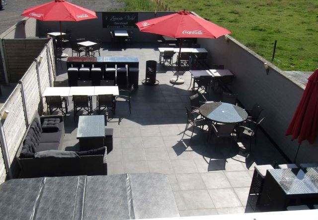
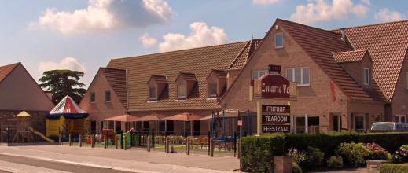

Restaurant
Van een uitgebreide maaltijd tot een gezellige lunch — met verse, seizoensgebonden gerechten en een zorgvuldig gekozen wijnkaart.
Sinds 19 december 2003 · Oedelem, West-Vlaanderen
Wij heten u van harte welkom vanwege Sylvie, Angelo en het volledige 't Zwarte Veld team. Restaurant, tearoom én feestzaal onder één dak — vers bereide gerechten, een warme familiesfeer en volop ruimte voor de kinderen, op het platteland tussen Oedelem en Knesselare.
Openingsstatus laden…
Ons verhaal
Sylvie genoot haar opleiding aan de hotel-toerismeschool "Spermalie" te Brugge en studeerde af in 2001. Ze liep stage in het "Steigenberger Kurhaus Hotel" te Bad Pyrmont (Duitsland) en te Scheveningen (Nederland), en hielp in 1999 mee op het huwelijk van Prins Filip en Prinses Mathilde.
Angelo genoot zijn opleiding aan hotelschool "Ter Groene Poorte" te Brugge, studeerde af in 1997 en volgde daarna nog een specialisatiejaar als wijnkenner-sommelier. Hij deed stage in restaurant "Detje" te Aalter, Hotel "Mercure" te Dinant, restaurant "'t Convent" te Reninge en wijndomein "Domaine La Petite Chapelle" te Saumur-Champigny (Frankrijk).
In februari 2001 kochten Sylvie en Angelo het vervallen café Lusthof te Oedelem. Ze bouwden — eigenhandig — een volledige nieuwbouw en openden op 19 december 2003 de deuren van 't Zwarte Veld: eerst als frituur, daarna geleidelijk uitgebreid tot een volwaardig restaurant · tearoom · feestzaal.
Tot binnenkort en hopend u te mogen bedienen —
Sylvie, Angelo, Tiamo, Ilany & het team

Wat mogen we voor u doen?
Van een uitgebreide maaltijd tot een gezellige lunch — met verse, seizoensgebonden gerechten en een zorgvuldig gekozen wijnkaart.
In de namiddag geniet u van pannenkoeken, wafels, ijscoupes of gewoon een lekker drankje op ons ruime terras.
De ideale plek voor uw communie, lentefeest, familiefeest of rouwmaaltijd, volledig verzorgd door ons team.
Binnen een speelhoek, buiten een speeltuin, springkasteel en trampoline — plus een aparte kinderkaart met kindermenu's.
Alle gerechten van de restaurant-, kinder- en tearoomkaart zijn af te halen — mét 20% korting. Bestel telefonisch, 30 min. vooraf.
Rust uit na een fietstocht door het uitgestrekte platteland op ons zonnige terras (april t.e.m. september).
Vanaf 1 november gaat onze eindejaarsactie opnieuw van start. Kom langs in november, december, januari en februari en spaar mee voor leuke geschenken!
Vier het samen
Of het nu gaat om een communie, lentefeest, verjaardag, familiefeest, een gezellige dansavond of een serene rouwmaaltijd — bij 't Zwarte Veld bent u aan het juiste adres. Wij denken met u mee, van menu tot aankleding.

Wanneer bent u welkom?
| Maandag | Op reservatie (groepen & feesten) |
|---|---|
| Dinsdag | Op reservatie (groepen & feesten) |
| Woensdag | Op reservatie (groepen & feesten) |
| Donderdag | Op reservatie (groepen & feesten) |
| Vrijdag | Vanaf 17u00 |
| Zaterdag | Vanaf 11u45 |
| Zondag | Vanaf 11u45 |
We raden aan om steeds te reserveren op 0492 68 77 40 of via info@zwarteveld.eu. Ook buiten deze uren zijn we open voor groepen, feesten en rouwmaaltijden.
Reserveer eenvoudig telefonisch of per mail. Grote groep of feest? Neem gerust contact op voor een menu op maat.
📞 0492 68 77 40 ✉️ info@zwarteveld.euZo vindt u ons
Knesselarestraat 180, 8730 Oedelem — op de baan Knesselare–Oedelem–Brugge.
Contact & reserveren
Wilt u reserveren of meer info over onze feestzaal, menu's of afhaalmaaltijden? Laat gerust van u horen — we helpen u graag verder.